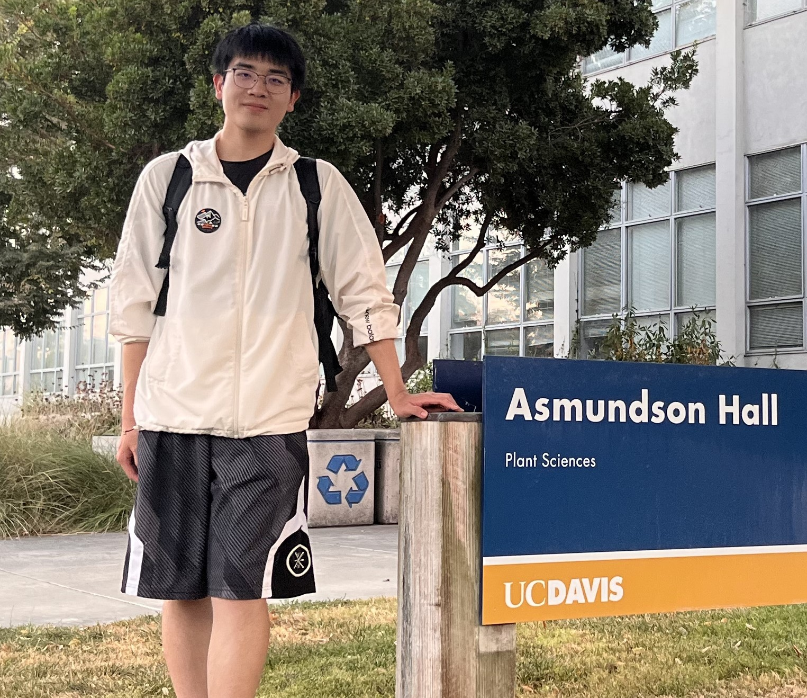

李煜 (Yu Li)
乔治·华盛顿大学 (George Washington University), 华盛顿特区. 2025.9-2029.5(预计)
武汉大学(Wuhan University) 弘毅学堂2021级

我目前是乔治·华盛顿大学 一年级博士候选人，导师是 Tian Lan 教授，并与 Zhengling Qi 教授合作。
研究方向: 强化学习 • 后训练策略优化 • 生成式AI
近期动态 (News)
- [02/2026] CRAFT-LORA 被 CVPR 2026 接收 🎉. 6月丹佛见！
- [02/2026] ACDZero 被 ICCN@INFOCOM 2026 接收 🎉. 5月东京见!
- [01/2026] 我在第一学期就通过了博士资格考试！现在已成为博士候选人（PhD Candidate）🎓.
- [01/2026] KG-SAM 被 ICASSP 2026 接收 🎉.
- [11/2025] SoRA 被 AAAI 2026 接收 🎉.
论文发表 (Publications)
预印本 / 在投 (Preprint / Under Review)
Unlocking Implicit Self-Reflection in Preference Optimization for LLM Alignment
· 论文 · 代码
· 论文 · 代码
从偏好对中挖掘隐式“自我反思”信号，提升偏好优化与 LLM 对齐效果。
直接偏好优化简单偏好优化强化学习
Aligning LLMs with Finite State Machine Logic for Multi-turn Verilog Code Generation
通过结构化对齐让 LLM 学习有限状态机转移逻辑，实现多轮 Verilog 生成。
RLVR代码生成Verilog 状态机
会议论文 (Conferences)
CRAFT-LORA: Content-Style Personalization via Rank-Constrained Adaptation
· 论文
· 论文
秩约束 LoRA 适配，实现内容-风格解耦与个性化图像生成。
生成式AI个性化生图LoRA
ACDZero: MCTS Agent for Mastering Automated Cyber Defense
结合图表示学习的 MCTS 规划方法，用于样本高效的自动化网络防御。
网络防御MCTSGNN
KG-SAM: Injecting Anatomical Knowledge into Segment Anything Models via Conditional Random Fields
融合知识图谱解剖先验与 CRF 边界优化的知识引导 SAM 医学分割框架。
医学分割SAM知识图谱CRF
Calibrating and Rotating: A Unified Framework for Weight Conditioning in PEFT
统一“校准 + 旋转”的权重条件化策略，提升 PEFT 性能与训练/推理效率。
LLMs PEFT权重条件化
期刊论文 (Journals)
Dual branch SAM-Transformer Fusion Network for Accurate Breast Ultrasound Image Segmentation
双分支 SAM–Transformer 融合网络，用于高精度乳腺超声分割。
超声分割SAMTransformer
SfMDiffusion: Self-supervised Monocular Depth Estimation in Endoscopy Based on Diffusion Models
面向内窥镜场景的自监督单目深度估计：扩散模型结合教师引导蒸馏。
深度估计扩散模型知识蒸馏
科研经历 (Experiences)
乔治·华盛顿大学, 移动智能实验室
西湖大学, 人工通用智能实验室
加州大学尔湾分校, 信息物理系统实验室
荣誉奖项 (Honors and Awards)
- 英诺国际交流奖学金，武汉大学，2024
- 英诺卓越奖学金（Top 3%），武汉大学，2023，2024
- 学术优秀奖学金（Top 5%），弘毅学堂，2022，2023，2024
- 甲等奖学金（Top 5%），武汉大学，2022，2023，2024
- 专利: 一种节能计算方法, CN116085952.
学术服务 (Academic Services)
- 会议审稿人: ICML’26, CVPR’26, ICLR’26, AAAI’26, ICASSP’26
- 期刊审稿人: Neurocomputing, Frontiers in Oncology, IEEE Transactions on Networking, Frontiers in Medicine
这个网站模版是从我最好的朋友那里偷来的。